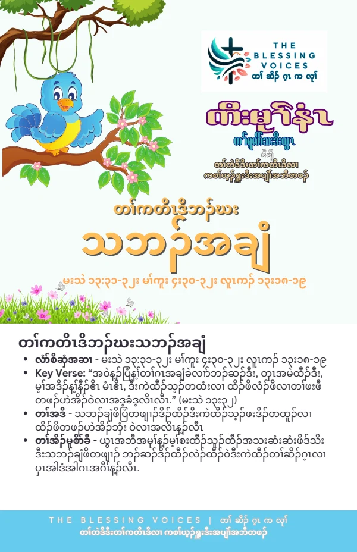

Introduction
This study page presents an English paraphrase of the biblical account and devotional reflections. Read the original companion booklet below. Context notes, life applications, reflection questions, and the closing prayer are study aids, not additional biblical text.
The Bible Story
Jesus compared the kingdom of heaven to a mustard seed that a man planted in his field. Though tiny, it grew into a large garden plant, described as a tree, so that birds came and nested in its branches. This retelling follows Matthew 13:31–32. Parallel accounts appear in Mark 4:30–32 and Luke 13:18–19.
Historical and Biblical Context
CONTEXT & DEVOTIONAL INTERPRETATIONJesus uses the contrast between a small seed and a large plant to illustrate the kingdom. The parallel accounts share the image of birds finding a place in the branches. The parable teaches through this growth illustration rather than naming a particular gardener or giving a detailed planting history.
Spiritual Lessons
CONTEXT & DEVOTIONAL INTERPRETATIONThe booklet emphasizes small beginnings, growth, and becoming a blessing to others. It connects these themes devotionally with Zechariah 4:10, Isaiah 60:22, and Genesis 12:2. Those passages have their own contexts and are not part of the mustard-seed story.
Practical Life Applications
CONTEXT & DEVOTIONAL INTERPRETATIONDo not dismiss a faithful action simply because it seems small. Establish one manageable habit of prayer, learning, or service. Look for ways your growth in faith can offer practical encouragement to another person. These are devotional applications, not a promise of a particular measurable outcome.
Reflection Questions
- How does the contrast between the seed and the grown plant encourage you?
- What small beginning in your life needs patient attention?
- How could your faith become a practical blessing to someone else?
Closing Prayer
Lord God, help us remain faithful in small beginnings. Nurture our trust and teach us to serve others with patience, hope, and love. Amen.
Continue your reflection.
Your free companion study booklet.
Download Free Booklet ↓PDF · Free download